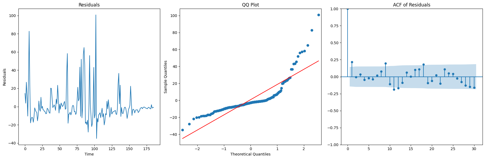
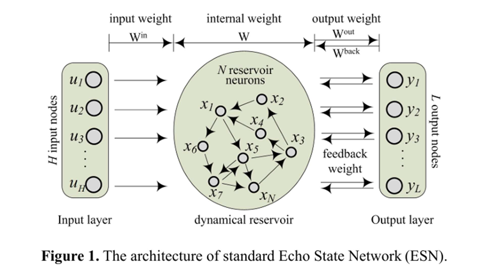
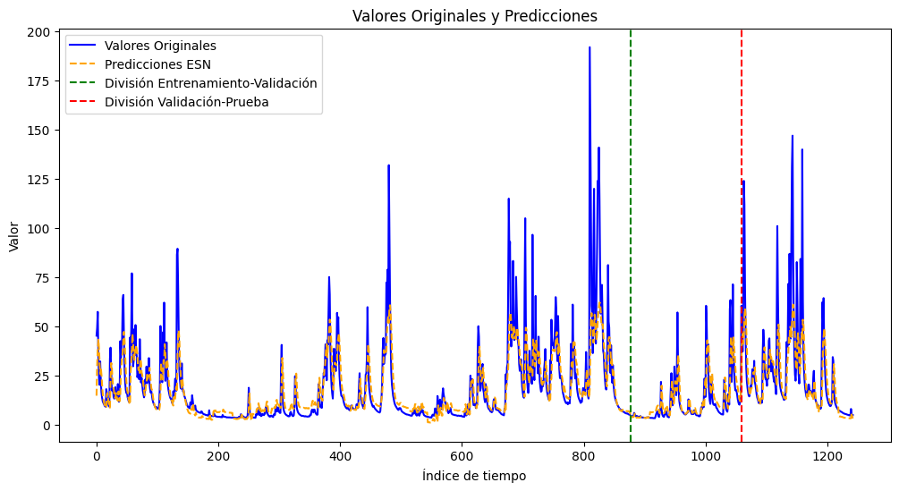

Modelos de redes neuronales#
from joblib import dump, load
from keras.callbacks import EarlyStopping
from keras.layers import SimpleRNN, LSTM, Dense, Dropout
from keras.models import Model
from keras.models import Sequential
from keras.optimizers import Adam
from matplotlib.ticker import MaxNLocator
from scipy.stats import jarque_bera
from sklearn.metrics import mean_absolute_error, mean_squared_error, r2_score
from sklearn.metrics import mean_squared_error
from sklearn.metrics import mean_squared_error, mean_absolute_error, r2_score
from sklearn.preprocessing import MinMaxScaler
from statsmodels.graphics.gofplots import qqplot
from statsmodels.graphics.tsaplots import plot_acf
from statsmodels.graphics.tsaplots import plot_acf, plot_pacf
from statsmodels.stats.diagnostic import acorr_ljungbox
from statsmodels.stats.stattools import jarque_bera
from statsmodels.tsa.api import acf
from statsmodels.tsa.stattools import acf, q_stat
from statsmodels.tsa.stattools import q_stat
from tensorflow import keras
from tensorflow.keras import backend as K
from tensorflow.keras.callbacks import Callback
from tensorflow.keras.callbacks import EarlyStopping, ModelCheckpoint
from tensorflow.keras.callbacks import ModelCheckpoint
from tensorflow.keras.layers import Dense, Dropout, Input, LSTM, SimpleRNN
from tensorflow.keras.layers import Input, Dense, Layer
from tensorflow.keras.losses import MeanSquaredError
from tensorflow.keras.models import load_model
from tensorflow.keras.models import Model
from tensorflow.keras.models import Sequential, load_model
from tensorflow.keras.optimizers import Adam, SGD
import datetime
import math
import matplotlib.pyplot as plt
import numpy as np
import os
import pandas as pd
import re
import seaborn as sns
import statsmodels.api as sm
import sys
import tensorflow as tf
import tensorflow_probability as tfp
import warnings
# Load the dataset
file_path = 'river_aire_discharge_timeseries.csv'
data = pd.read_csv(file_path)
# Display the first few rows to understand the structure
data.head()
# Check if 'discharge_armley' exists in the columns
'discharge_armley' in data.columns
True
import pandas as pd
import numpy as np
import time
from sklearn.metrics import mean_absolute_percentage_error, mean_absolute_error, mean_squared_error, r2_score
from statsmodels.stats.diagnostic import acorr_ljungbox
from scipy.stats import jarque_bera
from statsmodels.graphics.tsaplots import plot_acf
from statsmodels.tsa.stattools import q_stat, acf
from statsmodels.graphics.gofplots import qqplot
import matplotlib.pyplot as plt
from tensorflow.keras.models import Sequential
from tensorflow.keras.layers import Dense, LSTM, SimpleRNN, Dropout
from tensorflow.keras.callbacks import EarlyStopping
from sklearn.preprocessing import MinMaxScaler
#preparar Datos
data['Date'] = pd.to_datetime(data['Date'], dayfirst=True)
data.set_index('Date', inplace=True)
#seleccionar columna de estudio
ts_data = data[['discharge_armley']].dropna()
# Escalar datos
scaler = MinMaxScaler(feature_range=(0, 1))
ts_scaled = scaler.fit_transform(ts_data)
# funcion para crear ventanas de entrenamiento de 30 días.
def create_sequences(data, sequence_length=30):
X, y = [], []
for i in range(len(data) - sequence_length):
X.append(data[i:i + sequence_length])
y.append(data[i + sequence_length])
return np.array(X), np.array(y)
# preparar ventana de entrenamientos
sequence_length = 30
X, y = create_sequences(ts_scaled, sequence_length)
# Dividir dataset training (70%), validation (15%) and testing (15%)
train_size = int(0.7 * len(X))
val_size = int(0.15 * len(X))
X_train, X_val, X_test = X[:train_size], X[train_size:train_size + val_size], X[train_size + val_size:]
y_train, y_val, y_test = y[:train_size], y[train_size:train_size + val_size], y[train_size + val_size:]
# Funcion de construcción de modelos
def build_model(model_type, input_shape, units=50, learning_rate=0.001, dropout_rate=0.2):
model = Sequential()
if model_type == 'RNN':
model.add(SimpleRNN(units, input_shape=input_shape))
elif model_type == 'LSTM':
model.add(LSTM(units, input_shape=input_shape))
elif model_type == 'MLP':
model.add(Dense(units, activation='relu', input_shape=(input_shape[0],)))
model.add(Dropout(dropout_rate)) # Add dropout layer for regularization
model.add(Dense(1))
model.compile(optimizer=Adam(learning_rate=learning_rate), loss='mse')
return model
# Busqueda por rejilla optimización
units_options = [50, 100]
learning_rate_options = [0.001, 0.01]
batch_size_options = [16, 32]
dropout_rate_options = [0.2, 0.3]
# Inicializar el escalador y preparar los datos de entrenamiento y prueba
scaler = MinMaxScaler(feature_range=(0, 1))
ts_scaled = scaler.fit_transform(ts_data)
# Ajustar el DataFrame de resultados
results = {
"Model": [],
"MAPE": [],
"MAE": [],
"RMSE": [],
"MSE": [],
"R2": [],
"Ljung-Box Test (p-value)": [],
"Jarque-Bera (p-value)": [],
"Training Time (s)": [],
"Best Parameters": []
}
# Modificar la función de evaluación para incluir tiempo de entrenamiento
def evaluate_model(model, X_test, y_test, name, best_params, start_time):
y_pred = model.predict(X_test)
y_pred_inverse = scaler.inverse_transform(y_pred)
y_test_inverse = scaler.inverse_transform(y_test.reshape(-1, 1))
# Calcular métricas
mae = mean_absolute_error(y_test_inverse, y_pred_inverse)
mse = mean_squared_error(y_test_inverse, y_pred_inverse)
rmse = np.sqrt(mse)
r2 = r2_score(y_test_inverse, y_pred_inverse)
mape = mean_absolute_percentage_error(y_test_inverse, y_pred_inverse)
# Calcular el tiempo de entrenamiento
training_time = time.time() - start_time
# Calcular pruebas estadísticas de normalidad e independencia de errores
residuals = y_test_inverse - y_pred_inverse
ljung_box_pval = acorr_ljungbox(residuals.flatten(), lags=[10], return_df=True)['lb_pvalue'].iloc[0]
jb_pval = jarque_bera(residuals.flatten())[1]
# Agregar resultados al diccionario
results['Model'].append(name)
results['MAPE'].append(mape)
results['MAE'].append(mae)
results['RMSE'].append(rmse)
results['MSE'].append(mse)
results['R2'].append(r2)
results['Ljung-Box Test (p-value)'].append(ljung_box_pval)
results['Jarque-Bera (p-value)'].append(jb_pval)
results['Training Time (s)'].append(training_time)
results['Best Parameters'].append(best_params)
# Realizar la búsqueda por rejilla y evaluar los modelos
models = ['RNN', 'LSTM', 'MLP']
for model_type in models:
best_mse = float("inf")
best_params = {}
for units in units_options:
for lr in learning_rate_options:
for batch_size in batch_size_options:
for dropout in dropout_rate_options:
input_shape = (X_train.shape[1], X_train.shape[2]) if model_type != 'MLP' else (X_train.shape[1],)
model = build_model(model_type, input_shape, units, lr, dropout)
# Medir tiempo de inicio del entrenamiento
start_time = time.time()
# Entrenar el modelo
early_stopping = EarlyStopping(monitor='val_loss', patience=5)
model.fit(X_train, y_train, epochs=50, batch_size=batch_size,
validation_data=(X_val, y_val), callbacks=[early_stopping], verbose=0)
# Evaluar el modelo en conjunto de validación
y_pred_val = model.predict(X_val)
mse = mean_squared_error(y_val, y_pred_val)
# Guardar el mejor modelo
if mse < best_mse:
best_mse = mse
best_params = {
"units": units,
"learning_rate": lr,
"batch_size": batch_size,
"dropout_rate": dropout
}
best_model = model
# Evaluar y almacenar resultados del mejor modelo
evaluate_model(best_model, X_test, y_test, model_type, best_params, start_time)
# Convertir resultados a DataFrame
results_Redes = pd.DataFrame(results)
print(results_Redes)
# Mostrar las gráficas de los residuales
y_pred_scaled = best_model.predict(X_test)
residuals = scaler.inverse_transform(y_test.reshape(-1, 1)) - scaler.inverse_transform(y_pred_scaled)
# Graficar los residuales
fig, axes = plt.subplots(1, 3, figsize=(18, 6))
# Gráfico de residuales
axes[0].plot(residuals)
axes[0].set_title("Residuals")
axes[0].set_xlabel("Time")
axes[0].set_ylabel("Residuals")
# QQ plot
qqplot(residuals.flatten(), line='s', ax=axes[1])
axes[1].set_title("QQ Plot")
# ACF plot
plot_acf(residuals.flatten(), lags=30, ax=axes[2])
axes[2].set_title("ACF of Residuals")
plt.tight_layout()
plt.show()
6/6 [==============================] - 0s 3ms/step
6/6 [==============================] - 0s 3ms/step
6/6 [==============================] - 0s 3ms/step
6/6 [==============================] - 0s 3ms/step
6/6 [==============================] - 0s 3ms/step
6/6 [==============================] - 0s 4ms/step
6/6 [==============================] - 0s 3ms/step
6/6 [==============================] - 0s 4ms/step
6/6 [==============================] - 0s 5ms/step
6/6 [==============================] - 0s 7ms/step
6/6 [==============================] - 0s 5ms/step
6/6 [==============================] - 0s 6ms/step
6/6 [==============================] - 0s 6ms/step
6/6 [==============================] - 0s 6ms/step
6/6 [==============================] - 0s 5ms/step
6/6 [==============================] - 0s 7ms/step
6/6 [==============================] - 0s 6ms/step
6/6 [==============================] - 1s 9ms/step
6/6 [==============================] - 1s 5ms/step
6/6 [==============================] - 1s 8ms/step
6/6 [==============================] - 1s 9ms/step
6/6 [==============================] - 1s 9ms/step
6/6 [==============================] - 1s 8ms/step
6/6 [==============================] - 1s 8ms/step
6/6 [==============================] - 1s 8ms/step
6/6 [==============================] - 1s 14ms/step
6/6 [==============================] - 1s 13ms/step
6/6 [==============================] - 1s 12ms/step
6/6 [==============================] - 1s 9ms/step
6/6 [==============================] - 1s 12ms/step
6/6 [==============================] - 1s 8ms/step
6/6 [==============================] - 1s 10ms/step
6/6 [==============================] - 1s 9ms/step
6/6 [==============================] - 0s 6ms/step
6/6 [==============================] - 0s 4ms/step
6/6 [==============================] - 0s 3ms/step
6/6 [==============================] - 0s 3ms/step
6/6 [==============================] - 0s 3ms/step
6/6 [==============================] - 0s 6ms/step
6/6 [==============================] - 0s 3ms/step
6/6 [==============================] - 0s 1ms/step
6/6 [==============================] - 0s 4ms/step
6/6 [==============================] - 0s 3ms/step
6/6 [==============================] - 0s 3ms/step
6/6 [==============================] - 0s 3ms/step
6/6 [==============================] - 0s 3ms/step
6/6 [==============================] - 0s 3ms/step
6/6 [==============================] - 0s 3ms/step
6/6 [==============================] - 0s 3ms/step
6/6 [==============================] - 0s 2ms/step
6/6 [==============================] - 0s 2ms/step
Model MAPE MAE RMSE MSE R2 \
0 RNN 0.252350 9.110001 17.270392 298.266427 0.558912
1 LSTM 0.234093 8.754895 16.592538 275.312320 0.592858
2 MLP 0.380453 10.637521 17.928762 321.440499 0.524641
Ljung-Box Test (p-value) Jarque-Bera (p-value) Training Time (s) \
0 0.036352 6.353513e-212 9.720654
1 0.453906 4.145922e-169 17.014398
2 0.021082 1.361567e-166 3.746354
Best Parameters
0 {'units': 50, 'learning_rate': 0.001, 'batch_s...
1 {'units': 50, 'learning_rate': 0.001, 'batch_s...
2 {'units': 50, 'learning_rate': 0.01, 'batch_si...
6/6 [==============================] - 0s 3ms/step

Los residuos no parecen ser normales ni tener media cero.
BESN#
La base del BESN es el ESN, es un tipo de red neuronal que consta de una capa de entrada, una capa del reservorio que y una caoa de salida
Para la entrada dada, el estado del reservorio x y la salida deseada t, la suma de cuadrados del error
\(E_D = \frac{1}{2} \sum_{i=1}^n \left( f(z_i; W^{\text{out}}) - t_i \right)^2\)
se selecciona como la funcion de velaución de rendiemiento.
el término de regularización se introduce en la función de evaluación del rendimiento en base a la técnica de regularización. \(E_W = \frac{1}{2} \sum_{i=1}^L \left( W^{\text{out}} \right)^2\)
la función de error se puede obtener de la siguiente manera:
\(F(W^{\text{out}}) = \beta E_D + \alpha E_W\)
Donde alpha y beta son hiperparametros de y n es el tamaño de la muestra
En el proceso de entrenamiento los datos se muestran indicados de la siguiente manera: \(\{ (u_i, t_i) \mid i = 1, \dots, T \}\)
Despues de haber establecer al entrada en el estado del reservorio x y la salida deseada en t, podemos obtener una serie de pares de datos
\(\{ (\mathbf{z}_i, t_i) \mid i = 1, \dots, n \}\)
Luego la matriz de pesos de salida se estima mediante el método bayesiano
La teoría Bayesiana se centra en la distribución de probabilidad de los pesos. El proceso de aprendizaje convencional comienza con una distribución de probabilidad previa adecuada de los pesos de salida Pwout, antes de que se obtengan los datos observados. Dado el conjunto de muestras, se utiliza el teorema de Bayes para escribir una expresión de la distribución de probabilidad posterior para los pesos de salida de la siguiente manera:
donde $\( p(\mathbf{W}^{\text{out}} \mid D)\)$ es la función de verosimilitud; el denominador p(D) es un factor de normalización.
donde ZM(α,β) no están relacionado con Wout Por lo tanto, los pesos óptimos de salida de la red se pueden entrenar minimizando la función de error F(Wout) o maximizando la distribución posterior \(p(\mathbf{W}^{\text{out}} \mid D)\)
La BESN tiene dos hiperparámetros, de los cuales αalpha controla la distribución previa de los pesos de salida, y betaβ controla la distribución de la función de verosimilitud. Basado en la aproximación de Laplace, la distribución de probabilidad posterior de los pesos de salida de la red se puede escribir aproximadamente como:
\(p(w \mid D) \approx p(w \mid \alpha^*, \beta^*, D)\)
Donde \alpha^* y \beta^* son los valores óptimos. Por lo tanto, se necesitan alphaα∗ y betaβ∗ para maximizar la probabilidad posterior de los pesos de salida. Según , los valores óptimos de los hiperparámetros son: $\( \alpha^* = \frac{\gamma}{2 E_W}, \quad \beta^* = \frac{n - \gamma}{2 E_D} \tag{7} \)$
donde $\( \gamma = \sum_{i=1}^L \frac{\lambda_i}{\lambda_i + \alpha} \)$
y λi es el valor propio de la matriz Hessiana de la función de error EDE_DED.
from IPython.display import Image, display
# Sinteis del modelo
image_path = "image.png"
display(Image(filename=image_path))

file_path = 'river_aire_discharge_timeseries.csv'
df = pd.read_csv(file_path)
# Copiar la columna 'Price' a una nueva variable
df = df['discharge_armley'].copy()
# Crear el escalador
scaler = MinMaxScaler(feature_range=(0, 1))
# Escalar los datos
df_scaled = scaler.fit_transform(df.values.reshape(-1, 1)).flatten()
# Convertir a DataFrame si es necesario
df_discharge_scaled = pd.DataFrame(df_scaled, columns=['discharge_scaled'])
print(df_discharge_scaled)
discharge_scaled
0 0.021887
1 0.033704
2 0.037096
3 0.033863
4 0.026868
... ...
1259 0.007684
1260 0.025066
1261 0.010970
1262 0.008691
1263 0.008320
[1264 rows x 1 columns]
BESN#
import tensorflow as tf
import tensorflow_probability as tfp
from tensorflow.keras.layers import Layer, Input
from tensorflow.keras.models import Model
import numpy as np
# Definición de la Echo State Layer
class EchoStateLayer(Layer):
def __init__(self, units, spectral_radius=0.9, leaky_rate=1.0, **kwargs):
super(EchoStateLayer, self).__init__(**kwargs)
self.units = units
self.spectral_radius = spectral_radius
self.leaky_rate = leaky_rate
def build(self, input_shape):
initial_weights = np.random.uniform(-0.5, 0.5, size=(self.units, self.units)).astype(np.float32)
max_eigenvalue = np.max(np.abs(np.linalg.eigvals(initial_weights)))
self.reservoir_weights = self.add_weight(
shape=(self.units, self.units),
initializer=tf.keras.initializers.Constant(initial_weights / max_eigenvalue * self.spectral_radius),
trainable=False,
name='reservoir_weights'
)
self.input_weights = self.add_weight(
shape=(input_shape[-1], self.units),
initializer=tf.keras.initializers.RandomUniform(-0.5, 0.5),
trainable=False,
name='input_weights'
)
def call(self, inputs):
batch_size = tf.shape(inputs)[0]
time_steps = tf.shape(inputs)[1]
state = tf.zeros((batch_size, self.units))
# Utilizar tf.TensorArray para gestionar estados sin problemas de grafo
states = tf.TensorArray(dtype=tf.float32, size=time_steps)
for t in range(time_steps):
current_input = inputs[:, t, :]
state_update = tf.nn.tanh(tf.matmul(current_input, self.input_weights) + tf.matmul(state, self.reservoir_weights))
state = (1 - self.leaky_rate) * state + self.leaky_rate * state_update
states = states.write(t, state)
# Apilar todos los estados para obtener una salida con 3 dimensiones
return tf.transpose(states.stack(), perm=[1, 0, 2]) # shape (batch_size, time_steps, units)
# Crear una función para construir el modelo
def create_bayesian_ESN(input_shape, reservoir_units, output_dim, prior_stddev, alpha, beta):
inputs = Input(shape=input_shape)
esn = EchoStateLayer(reservoir_units, spectral_radius=0.9, leaky_rate=0.5)(inputs)
esn = esn[:, -1, :] # Tomar el último estado (shape (batch_size, units))
outputs = BayesianDense(output_dim, prior_stddev)(esn)
model = Model(inputs, outputs)
model.compile(optimizer='adam', loss=bayesian_loss(beta=beta, alpha=alpha))
return model
def create_sliding_windows(data, window_sizes, step_size, taus): # Función para crear las ventanas de tiempo
result_dict = {} # Diccionario para almacenar los DataFrames por `window_size`
for w in window_sizes:
all_combined_dfs = [] # Para almacenar resultados combinados para el tamaño de ventana actual
for t in taus:
X, y = [], []
for i in range(0, len(data) - (w + t), step_size):
# Ventana de entrada
X.append(data[i:i + w])
# Extraer el valor específico de `tau` pasos adelante
future_value = data[i + w + t - 1] # -1 para índice cero
y.append([future_value]) # Guarda solo el valor correspondiente a `tau`
# Convertir X e y en DataFrames
df_X = pd.DataFrame(np.array(X).squeeze()) # Asegura que sea un array 2D (n, w)
df_y = pd.DataFrame(y, columns=[f'Tau_{t}']) # Solo la columna para el tau actual
# Combinar los DataFrames de X e y
df_combined = pd.concat([df_X, df_y], axis=1)
all_combined_dfs.append(df_combined)
# Combina todos los resultados para el tamaño de ventana actual
final_df = pd.concat(all_combined_dfs, axis=0).reset_index(drop=True)
# Guarda en el diccionario
result_dict[f'Window_{w}'] = final_df
return result_dict
def segment_data_by_window(df, train_size, val_size, test_size): # Función para segmentar los datos en train, validation y test
train_data, val_data, test_data = [], [], []
i = 0
while i + train_size + val_size + test_size <= len(df):
# Segmento de entrenamiento
train_data.append(df.iloc[i:i + train_size])
# Segmento de validación
val_data.append(df.iloc[i + train_size:i + train_size + val_size])
# Segmento de prueba
test_data.append(df.iloc[i + train_size + val_size:i + train_size + val_size + test_size])
# Mover el índice al siguiente bloque
i += train_size + val_size + test_size
# Concatenar los segmentos de datos
train_data = pd.concat(train_data).reset_index(drop=True)
val_data = pd.concat(val_data).reset_index(drop=True)
test_data = pd.concat(test_data).reset_index(drop=True)
return train_data, val_data, test_data,df
class ManualR2Callback(Callback): #Calculo del r2 como métrica personalizada e incluirse en el History.
def __init__(self, X_val, y_val):
super(ManualR2Callback, self).__init__()
self.X_val = X_val
self.y_val = y_val
def on_epoch_end(self, epoch, logs=None):
val_predictions = self.model.predict(self.X_val).flatten()
val_r2 = r2_score(self.y_val, val_predictions)
print(f"Epoch {epoch + 1}: Validation R2 Score = {val_r2:.4f}")
def select_best_model(model, model_type, neurons, dropout, batch_size, epochs, X_train, y_train, X_val, y_val, X_test, y_test, return_history, window_size, tau,serie):
# Crear subdirectorio para el tamaño de ventana específico
model_dir = f'modelos_{serie}/models_window_{window_size}_tau_{tau}'
os.makedirs(model_dir, exist_ok=True)
# Nombre lógico del archivo basado en los parámetros del modelo
base_filename = f'{model_type}_{neurons}neurons_{dropout}dropout_batch{batch_size}_window{window_size}_tau{tau}'
model_filename = os.path.join(model_dir, f'{base_filename}_best_model.keras')
history_filename = os.path.join(model_dir, f'{base_filename}_history.joblib')
# Callback para guardar el mejor modelo
save_best = ModelCheckpoint(model_filename, monitor='val_mean_squared_error', verbose=1,
save_best_only=True, mode='min', save_weights_only=False)
# Callback para calcular R2 manual al final de cada época
manual_r2_callback = ManualR2Callback(X_val, y_val)
# Variable para decidir si entrenar un nuevo modelo
load_new_model = True
best_val_mse = float('inf')
existing_epochs = 0
# Cargar historial previo si existe y verificar el val_mean_squared_error y las épocas
if os.path.exists(history_filename):
history_data = load(history_filename)
existing_epochs = len(history_data['loss'])
if 'val_mean_squared_error' in history_data:
best_val_mse = min(history_data['val_mean_squared_error'])
# Comprobar si el modelo existente tiene mejor val_mean_squared_error y mayor o igual épocas
if best_val_mse <= history_data['val_mean_squared_error'][-1] and existing_epochs >= epochs:
print(f"Modelo previo con mejor val_mean_squared_error ({best_val_mse}) y más épocas ({existing_epochs}). No se reemplazará.")
load_new_model = False
else:
print(f"Se entrenará con {epochs} y actualizará si mejora el rendimiento.")
# Entrenar y guardar el modelo si se requiere uno nuevo
if load_new_model:
# Entrenar el modelo y guardar el historial
history = model.fit(x=X_train, y=y_train, batch_size=batch_size, epochs=epochs,
verbose=2, callbacks=[save_best, manual_r2_callback], validation_data=(X_val, y_val),
shuffle=True)
# Guardar el historial en el archivo .joblib
history_data = history.history
# Evaluar el mejor modelo en el conjunto de prueba
test_results = model.evaluate(X_test, y_test, verbose=0)
test_metrics = {f'test_{metric}': value for metric, value in zip(model.metrics_names, test_results)}
# Agregar métricas de prueba al historial
for metric, value in test_metrics.items():
history_data[metric] = [value]
# Guardar el historial con las métricas de prueba
dump(history_data, history_filename)
print(f"El entrenamiento se ha completado y el historial se guardó en '{history_filename}'")
# Verificar y cargar el mejor modelo guardado
if os.path.exists(model_filename):
print(f"El mejor modelo guardado está en '{model_filename}'")
best_model = load_model(model_filename)
else:
print("No se encontró un modelo previo con mejor val_mean_squared_error.")
best_model = model
# Retornar el mejor modelo y el historial, si es necesario
if return_history:
return best_model, history_data
else:
return best_model
# Extraer valores de la columna 'discharge_armley'
values = ts_data['discharge_armley'].values.reshape(-1, 1) # Asegúrate de que los valores sean 2D
# Definir proporciones para dividir los datos
train_size = int(len(values) * 0.7)
val_size = int(len(values) * 0.15)
# Separar los datos
train_data = values[:train_size]
val_data = values[train_size:train_size + val_size]
test_data = values[train_size + val_size:]
print(f"Train data length: {len(train_data)}")
print(f"Validation data length: {len(val_data)}")
print(f"Test data length: {len(test_data)}")
Train data length: 884
Validation data length: 189
Test data length: 191
def get_XY(data, time_steps):
X, Y = [], []
for i in range(len(data) - time_steps):
X.append(data[i:(i + time_steps)])
Y.append(data[i + time_steps])
return np.array(X), np.array(Y)
# Definir el número de pasos de tiempo
time_steps = 7
# Crear ventanas deslizantes para cada conjunto
trainX, trainY = get_XY(train_data, time_steps)
valX, valY = get_XY(val_data, time_steps)
testX, testY = get_XY(test_data, time_steps)
# Ajustar la forma para el modelo ESN
trainX = trainX.reshape((trainX.shape[0], trainX.shape[1], 1))
valX = valX.reshape((valX.shape[0], valX.shape[1], 1))
testX = testX.reshape((testX.shape[0], testX.shape[1], 1))
trainY = trainY.reshape(-1, 1)
valY = valY.reshape(-1, 1)
testY = testY.reshape(-1, 1)
# Verificar las formas
print(f"trainX shape: {trainX.shape}, trainY shape: {trainY.shape}")
print(f"valX shape: {valX.shape}, valY shape: {valY.shape}")
print(f"testX shape: {testX.shape}, testY shape: {testY.shape}")
trainX shape: (877, 7, 1), trainY shape: (877, 1)
valX shape: (182, 7, 1), valY shape: (182, 1)
testX shape: (184, 7, 1), testY shape: (184, 1)
# Definir los rangos de parámetros a explorar
reservoir_units_list = [100, 200, 500]
prior_stddev_list = [0.1, 0.25, 0.5]
alpha_list = [0.01, 0.1, 0.5]
beta_list = [0.01, 0.1, 0.5]
# Variables para guardar el mejor modelo y el mejor error
best_mse = float('inf')
best_params = None
best_model = None
# Ciclo para iterar sobre todos los parámetros
for reservoir_units in reservoir_units_list:
for prior_stddev in prior_stddev_list:
for alpha in alpha_list:
for beta in beta_list:
# Crear el modelo BESN con los parámetros actuales
model_ESN = create_bayesian_ESN(
input_shape=(trainX.shape[1], trainX.shape[2]),
reservoir_units=reservoir_units,
output_dim=1,
prior_stddev=prior_stddev,
alpha=alpha,
beta=beta
)
# Crear dataset con drop_remainder=True
train_dataset = Dataset.from_tensor_slices((trainX, trainY)).batch(32, drop_remainder=True)
val_dataset = Dataset.from_tensor_slices((valX, valY)).batch(32, drop_remainder=True)
# Entrenar el modelo
model_ESN.fit(train_dataset, epochs=20, validation_data=val_dataset, verbose=0)
# Realizar predicciones en el conjunto de validación
val_predict = model_ESN.predict(valX)
# Calcular el MSE en el conjunto de validación
mse = mean_squared_error(valY, val_predict)
# Verificar si es el mejor modelo hasta ahora
if mse < best_mse:
best_mse = mse
best_params = (reservoir_units, prior_stddev, alpha, beta)
best_model = model_ESN
print(f"Reservoir Units: {reservoir_units}, Prior Stddev: {prior_stddev}, Alpha: {alpha}, Beta: {beta} => Validation MSE: {mse:.4f}")
# Mostrar los mejores parámetros
print(f"Mejor modelo con MSE: {best_mse:.4f}")
print(f"Reservoir Units: {best_params[0]}, Prior Stddev: {best_params[1]}, Alpha: {best_params[2]}, Beta: {best_params[3]}")
6/6 [==============================] - 0s 3ms/step
Reservoir Units: 100, Prior Stddev: 0.1, Alpha: 0.01, Beta: 0.01 => Validation MSE: 249.7475
6/6 [==============================] - 0s 3ms/step
Reservoir Units: 100, Prior Stddev: 0.1, Alpha: 0.01, Beta: 0.1 => Validation MSE: 164.9912
6/6 [==============================] - 0s 3ms/step
Reservoir Units: 100, Prior Stddev: 0.1, Alpha: 0.01, Beta: 0.5 => Validation MSE: 108.8535
6/6 [==============================] - 0s 3ms/step
Reservoir Units: 100, Prior Stddev: 0.1, Alpha: 0.1, Beta: 0.01 => Validation MSE: 266.7669
6/6 [==============================] - 0s 3ms/step
Reservoir Units: 100, Prior Stddev: 0.1, Alpha: 0.1, Beta: 0.1 => Validation MSE: 248.9261
6/6 [==============================] - 0s 3ms/step
Reservoir Units: 100, Prior Stddev: 0.1, Alpha: 0.1, Beta: 0.5 => Validation MSE: 212.2305
6/6 [==============================] - 0s 3ms/step
Reservoir Units: 100, Prior Stddev: 0.1, Alpha: 0.5, Beta: 0.01 => Validation MSE: 251.9120
6/6 [==============================] - 0s 2ms/step
Reservoir Units: 100, Prior Stddev: 0.1, Alpha: 0.5, Beta: 0.1 => Validation MSE: 263.8882
6/6 [==============================] - 0s 3ms/step
Reservoir Units: 100, Prior Stddev: 0.1, Alpha: 0.5, Beta: 0.5 => Validation MSE: 239.4041
6/6 [==============================] - 0s 2ms/step
Reservoir Units: 100, Prior Stddev: 0.25, Alpha: 0.01, Beta: 0.01 => Validation MSE: 286.5094
6/6 [==============================] - 0s 4ms/step
Reservoir Units: 100, Prior Stddev: 0.25, Alpha: 0.01, Beta: 0.1 => Validation MSE: 142.0095
6/6 [==============================] - 0s 4ms/step
Reservoir Units: 100, Prior Stddev: 0.25, Alpha: 0.01, Beta: 0.5 => Validation MSE: 97.9395
6/6 [==============================] - 0s 4ms/step
Reservoir Units: 100, Prior Stddev: 0.25, Alpha: 0.1, Beta: 0.01 => Validation MSE: 260.7972
6/6 [==============================] - 0s 4ms/step
Reservoir Units: 100, Prior Stddev: 0.25, Alpha: 0.1, Beta: 0.1 => Validation MSE: 249.5653
6/6 [==============================] - 0s 4ms/step
Reservoir Units: 100, Prior Stddev: 0.25, Alpha: 0.1, Beta: 0.5 => Validation MSE: 198.2802
6/6 [==============================] - 0s 4ms/step
Reservoir Units: 100, Prior Stddev: 0.25, Alpha: 0.5, Beta: 0.01 => Validation MSE: 244.4512
6/6 [==============================] - 0s 4ms/step
Reservoir Units: 100, Prior Stddev: 0.25, Alpha: 0.5, Beta: 0.1 => Validation MSE: 255.4105
6/6 [==============================] - 0s 4ms/step
Reservoir Units: 100, Prior Stddev: 0.25, Alpha: 0.5, Beta: 0.5 => Validation MSE: 249.7768
6/6 [==============================] - 0s 4ms/step
Reservoir Units: 100, Prior Stddev: 0.5, Alpha: 0.01, Beta: 0.01 => Validation MSE: 311.0165
6/6 [==============================] - 0s 4ms/step
Reservoir Units: 100, Prior Stddev: 0.5, Alpha: 0.01, Beta: 0.1 => Validation MSE: 176.9021
6/6 [==============================] - 0s 4ms/step
Reservoir Units: 100, Prior Stddev: 0.5, Alpha: 0.01, Beta: 0.5 => Validation MSE: 97.9792
6/6 [==============================] - 0s 4ms/step
Reservoir Units: 100, Prior Stddev: 0.5, Alpha: 0.1, Beta: 0.01 => Validation MSE: 327.4695
6/6 [==============================] - 0s 4ms/step
Reservoir Units: 100, Prior Stddev: 0.5, Alpha: 0.1, Beta: 0.1 => Validation MSE: 231.6728
6/6 [==============================] - 0s 5ms/step
Reservoir Units: 100, Prior Stddev: 0.5, Alpha: 0.1, Beta: 0.5 => Validation MSE: 236.0113
6/6 [==============================] - 0s 4ms/step
Reservoir Units: 100, Prior Stddev: 0.5, Alpha: 0.5, Beta: 0.01 => Validation MSE: 216.9716
6/6 [==============================] - 0s 4ms/step
Reservoir Units: 100, Prior Stddev: 0.5, Alpha: 0.5, Beta: 0.1 => Validation MSE: 293.0102
6/6 [==============================] - 0s 4ms/step
Reservoir Units: 100, Prior Stddev: 0.5, Alpha: 0.5, Beta: 0.5 => Validation MSE: 315.9461
6/6 [==============================] - 0s 4ms/step
Reservoir Units: 200, Prior Stddev: 0.1, Alpha: 0.01, Beta: 0.01 => Validation MSE: 243.6297
6/6 [==============================] - 0s 5ms/step
Reservoir Units: 200, Prior Stddev: 0.1, Alpha: 0.01, Beta: 0.1 => Validation MSE: 164.3615
6/6 [==============================] - 0s 4ms/step
Reservoir Units: 200, Prior Stddev: 0.1, Alpha: 0.01, Beta: 0.5 => Validation MSE: 97.0298
6/6 [==============================] - 0s 5ms/step
Reservoir Units: 200, Prior Stddev: 0.1, Alpha: 0.1, Beta: 0.01 => Validation MSE: 268.3932
6/6 [==============================] - 0s 5ms/step
Reservoir Units: 200, Prior Stddev: 0.1, Alpha: 0.1, Beta: 0.1 => Validation MSE: 258.3056
6/6 [==============================] - 0s 5ms/step
Reservoir Units: 200, Prior Stddev: 0.1, Alpha: 0.1, Beta: 0.5 => Validation MSE: 215.6567
6/6 [==============================] - 0s 5ms/step
Reservoir Units: 200, Prior Stddev: 0.1, Alpha: 0.5, Beta: 0.01 => Validation MSE: 239.5653
6/6 [==============================] - 0s 5ms/step
Reservoir Units: 200, Prior Stddev: 0.1, Alpha: 0.5, Beta: 0.1 => Validation MSE: 277.7855
6/6 [==============================] - 0s 5ms/step
Reservoir Units: 200, Prior Stddev: 0.1, Alpha: 0.5, Beta: 0.5 => Validation MSE: 252.1200
6/6 [==============================] - 0s 5ms/step
Reservoir Units: 200, Prior Stddev: 0.25, Alpha: 0.01, Beta: 0.01 => Validation MSE: 197.9625
6/6 [==============================] - 0s 5ms/step
Reservoir Units: 200, Prior Stddev: 0.25, Alpha: 0.01, Beta: 0.1 => Validation MSE: 146.2767
6/6 [==============================] - 0s 5ms/step
Reservoir Units: 200, Prior Stddev: 0.25, Alpha: 0.01, Beta: 0.5 => Validation MSE: 109.8248
6/6 [==============================] - 0s 5ms/step
Reservoir Units: 200, Prior Stddev: 0.25, Alpha: 0.1, Beta: 0.01 => Validation MSE: 209.8959
6/6 [==============================] - 0s 5ms/step
Reservoir Units: 200, Prior Stddev: 0.25, Alpha: 0.1, Beta: 0.1 => Validation MSE: 306.3009
6/6 [==============================] - 0s 4ms/step
Reservoir Units: 200, Prior Stddev: 0.25, Alpha: 0.1, Beta: 0.5 => Validation MSE: 228.0183
6/6 [==============================] - 0s 4ms/step
Reservoir Units: 200, Prior Stddev: 0.25, Alpha: 0.5, Beta: 0.01 => Validation MSE: 267.9510
6/6 [==============================] - 0s 5ms/step
Reservoir Units: 200, Prior Stddev: 0.25, Alpha: 0.5, Beta: 0.1 => Validation MSE: 287.5687
6/6 [==============================] - 0s 3ms/step
Reservoir Units: 200, Prior Stddev: 0.25, Alpha: 0.5, Beta: 0.5 => Validation MSE: 240.8871
6/6 [==============================] - 0s 5ms/step
Reservoir Units: 200, Prior Stddev: 0.5, Alpha: 0.01, Beta: 0.01 => Validation MSE: 200.7401
6/6 [==============================] - 0s 5ms/step
Reservoir Units: 200, Prior Stddev: 0.5, Alpha: 0.01, Beta: 0.1 => Validation MSE: 271.7990
6/6 [==============================] - 0s 5ms/step
Reservoir Units: 200, Prior Stddev: 0.5, Alpha: 0.01, Beta: 0.5 => Validation MSE: 214.1960
6/6 [==============================] - 0s 5ms/step
Reservoir Units: 200, Prior Stddev: 0.5, Alpha: 0.1, Beta: 0.01 => Validation MSE: 292.6578
6/6 [==============================] - 0s 5ms/step
Reservoir Units: 200, Prior Stddev: 0.5, Alpha: 0.1, Beta: 0.1 => Validation MSE: 251.3021
6/6 [==============================] - 0s 5ms/step
Reservoir Units: 200, Prior Stddev: 0.5, Alpha: 0.1, Beta: 0.5 => Validation MSE: 159.1497
6/6 [==============================] - 0s 5ms/step
Reservoir Units: 200, Prior Stddev: 0.5, Alpha: 0.5, Beta: 0.01 => Validation MSE: 418.7118
6/6 [==============================] - 0s 4ms/step
Reservoir Units: 200, Prior Stddev: 0.5, Alpha: 0.5, Beta: 0.1 => Validation MSE: 332.9845
6/6 [==============================] - 0s 5ms/step
Reservoir Units: 200, Prior Stddev: 0.5, Alpha: 0.5, Beta: 0.5 => Validation MSE: 311.7580
6/6 [==============================] - 1s 12ms/step
Reservoir Units: 500, Prior Stddev: 0.1, Alpha: 0.01, Beta: 0.01 => Validation MSE: 239.3611
6/6 [==============================] - 0s 14ms/step
Reservoir Units: 500, Prior Stddev: 0.1, Alpha: 0.01, Beta: 0.1 => Validation MSE: 189.0238
6/6 [==============================] - 1s 12ms/step
Reservoir Units: 500, Prior Stddev: 0.1, Alpha: 0.01, Beta: 0.5 => Validation MSE: 81.3266
6/6 [==============================] - 1s 14ms/step
Reservoir Units: 500, Prior Stddev: 0.1, Alpha: 0.1, Beta: 0.01 => Validation MSE: 239.1362
6/6 [==============================] - 0s 8ms/step
Reservoir Units: 500, Prior Stddev: 0.1, Alpha: 0.1, Beta: 0.1 => Validation MSE: 236.3900
6/6 [==============================] - 0s 10ms/step
Reservoir Units: 500, Prior Stddev: 0.1, Alpha: 0.1, Beta: 0.5 => Validation MSE: 214.1130
6/6 [==============================] - 0s 8ms/step
Reservoir Units: 500, Prior Stddev: 0.1, Alpha: 0.5, Beta: 0.01 => Validation MSE: 290.9417
6/6 [==============================] - 0s 10ms/step
Reservoir Units: 500, Prior Stddev: 0.1, Alpha: 0.5, Beta: 0.1 => Validation MSE: 221.3669
6/6 [==============================] - 0s 8ms/step
Reservoir Units: 500, Prior Stddev: 0.1, Alpha: 0.5, Beta: 0.5 => Validation MSE: 277.8218
6/6 [==============================] - 0s 13ms/step
Reservoir Units: 500, Prior Stddev: 0.25, Alpha: 0.01, Beta: 0.01 => Validation MSE: 207.2105
6/6 [==============================] - 1s 16ms/step
Reservoir Units: 500, Prior Stddev: 0.25, Alpha: 0.01, Beta: 0.1 => Validation MSE: 213.6842
6/6 [==============================] - 1s 15ms/step
Reservoir Units: 500, Prior Stddev: 0.25, Alpha: 0.01, Beta: 0.5 => Validation MSE: 85.3525
6/6 [==============================] - 1s 15ms/step
Reservoir Units: 500, Prior Stddev: 0.25, Alpha: 0.1, Beta: 0.01 => Validation MSE: 340.1287
6/6 [==============================] - 1s 11ms/step
Reservoir Units: 500, Prior Stddev: 0.25, Alpha: 0.1, Beta: 0.1 => Validation MSE: 335.0992
6/6 [==============================] - 0s 11ms/step
Reservoir Units: 500, Prior Stddev: 0.25, Alpha: 0.1, Beta: 0.5 => Validation MSE: 179.9611
6/6 [==============================] - 0s 11ms/step
Reservoir Units: 500, Prior Stddev: 0.25, Alpha: 0.5, Beta: 0.01 => Validation MSE: 282.4954
6/6 [==============================] - 0s 10ms/step
Reservoir Units: 500, Prior Stddev: 0.25, Alpha: 0.5, Beta: 0.1 => Validation MSE: 285.9157
6/6 [==============================] - 0s 11ms/step
Reservoir Units: 500, Prior Stddev: 0.25, Alpha: 0.5, Beta: 0.5 => Validation MSE: 249.0081
6/6 [==============================] - 0s 7ms/step
Reservoir Units: 500, Prior Stddev: 0.5, Alpha: 0.01, Beta: 0.01 => Validation MSE: 488.2230
6/6 [==============================] - 0s 8ms/step
Reservoir Units: 500, Prior Stddev: 0.5, Alpha: 0.01, Beta: 0.1 => Validation MSE: 264.9414
6/6 [==============================] - 0s 9ms/step
Reservoir Units: 500, Prior Stddev: 0.5, Alpha: 0.01, Beta: 0.5 => Validation MSE: 199.5748
6/6 [==============================] - 0s 7ms/step
Reservoir Units: 500, Prior Stddev: 0.5, Alpha: 0.1, Beta: 0.01 => Validation MSE: 251.4583
6/6 [==============================] - 0s 8ms/step
Reservoir Units: 500, Prior Stddev: 0.5, Alpha: 0.1, Beta: 0.1 => Validation MSE: 339.6222
6/6 [==============================] - 0s 7ms/step
Reservoir Units: 500, Prior Stddev: 0.5, Alpha: 0.1, Beta: 0.5 => Validation MSE: 432.1844
6/6 [==============================] - 0s 8ms/step
Reservoir Units: 500, Prior Stddev: 0.5, Alpha: 0.5, Beta: 0.01 => Validation MSE: 264.3745
6/6 [==============================] - 0s 7ms/step
Reservoir Units: 500, Prior Stddev: 0.5, Alpha: 0.5, Beta: 0.1 => Validation MSE: 291.5942
6/6 [==============================] - 0s 7ms/step
Reservoir Units: 500, Prior Stddev: 0.5, Alpha: 0.5, Beta: 0.5 => Validation MSE: 546.9325
Mejor modelo con MSE: 81.3266
Reservoir Units: 500, Prior Stddev: 0.1, Alpha: 0.01, Beta: 0.5
A partir del análisis de los resultados de busqueda por reijlla. Evidenciamos que altos Beta, generan bajos errores. Bajos alphas también generan bajos errores en las predicciones. Prior_stddev, bajos permite tener una mayor estabilidad en el reservorio. Por lo tanto, iniciamos la creación de nuestro modelo BSEN con esta lógica de parámetros y lo ajustamos en el conjunto de entrenamiento y verificamos en el conjunto de validación. Con las épocas suficientes para alcanzar un error mínimo.
# Parámetros de ejemplo para crear el modelo
model_BESN = create_bayesian_ESN(
input_shape=(7, 1),
reservoir_units=500,
output_dim=1,
prior_stddev=0.1,
alpha=0.01, #para darle poca relevancia a los erorres en los pesos iniciales
beta=0.5 # alto darle mayor ponderación al error de los datos.
)
from tensorflow.data import Dataset
# Crear datasets con drop_remainder=False
train_dataset = Dataset.from_tensor_slices((trainX, trainY)).batch(8, drop_remainder=False)
val_dataset = Dataset.from_tensor_slices((valX, valY)).batch(8, drop_remainder=False)
# Entrenar usando el dataset
model_BESN.fit(train_dataset, validation_data=val_dataset, epochs=100,batch_size=64)
Epoch 1/100
110/110 [==============================] - 2s 7ms/step - loss: 260.5416 - val_loss: 88.8602
Epoch 2/100
110/110 [==============================] - 0s 4ms/step - loss: 222.3638 - val_loss: 96.0142
Epoch 3/100
110/110 [==============================] - 0s 4ms/step - loss: 208.4648 - val_loss: 83.4516
Epoch 4/100
110/110 [==============================] - 0s 4ms/step - loss: 194.6099 - val_loss: 76.3067
Epoch 5/100
110/110 [==============================] - 1s 7ms/step - loss: 188.9329 - val_loss: 72.2767
Epoch 6/100
110/110 [==============================] - 1s 5ms/step - loss: 179.2549 - val_loss: 80.6856
Epoch 7/100
110/110 [==============================] - 1s 5ms/step - loss: 176.3662 - val_loss: 64.1132
Epoch 8/100
110/110 [==============================] - 1s 5ms/step - loss: 170.3522 - val_loss: 63.2169
Epoch 9/100
110/110 [==============================] - 1s 5ms/step - loss: 163.7188 - val_loss: 61.5401
Epoch 10/100
110/110 [==============================] - 1s 5ms/step - loss: 166.2348 - val_loss: 59.5217
Epoch 11/100
110/110 [==============================] - 1s 5ms/step - loss: 163.2531 - val_loss: 58.4462
Epoch 12/100
110/110 [==============================] - 1s 5ms/step - loss: 163.2925 - val_loss: 56.9630
Epoch 13/100
110/110 [==============================] - 1s 5ms/step - loss: 159.6491 - val_loss: 57.7527
Epoch 14/100
110/110 [==============================] - 1s 6ms/step - loss: 156.8918 - val_loss: 58.7172
Epoch 15/100
110/110 [==============================] - 1s 7ms/step - loss: 157.1040 - val_loss: 62.0685
Epoch 16/100
110/110 [==============================] - 1s 7ms/step - loss: 154.0622 - val_loss: 60.7770
Epoch 17/100
110/110 [==============================] - 1s 7ms/step - loss: 154.7111 - val_loss: 56.1599
Epoch 18/100
110/110 [==============================] - 1s 8ms/step - loss: 149.9905 - val_loss: 57.3530
Epoch 19/100
110/110 [==============================] - 1s 9ms/step - loss: 149.0518 - val_loss: 57.4266
Epoch 20/100
110/110 [==============================] - 1s 6ms/step - loss: 155.4465 - val_loss: 56.8641
Epoch 21/100
110/110 [==============================] - 1s 7ms/step - loss: 150.3490 - val_loss: 57.0910
Epoch 22/100
110/110 [==============================] - 1s 7ms/step - loss: 154.2328 - val_loss: 54.5338
Epoch 23/100
110/110 [==============================] - 1s 6ms/step - loss: 147.4266 - val_loss: 58.4048
Epoch 24/100
110/110 [==============================] - 1s 7ms/step - loss: 154.8792 - val_loss: 56.7961
Epoch 25/100
110/110 [==============================] - 0s 4ms/step - loss: 146.1291 - val_loss: 60.0738
Epoch 26/100
110/110 [==============================] - 1s 5ms/step - loss: 146.9267 - val_loss: 59.3339
Epoch 27/100
110/110 [==============================] - 0s 4ms/step - loss: 147.3817 - val_loss: 58.8439
Epoch 28/100
110/110 [==============================] - 1s 5ms/step - loss: 151.8200 - val_loss: 57.8485
Epoch 29/100
110/110 [==============================] - 1s 6ms/step - loss: 145.7215 - val_loss: 52.3221
Epoch 30/100
110/110 [==============================] - 1s 6ms/step - loss: 145.9840 - val_loss: 59.1667
Epoch 31/100
110/110 [==============================] - 1s 5ms/step - loss: 146.7850 - val_loss: 54.8234
Epoch 32/100
110/110 [==============================] - 0s 5ms/step - loss: 143.6570 - val_loss: 56.0979
Epoch 33/100
110/110 [==============================] - 0s 4ms/step - loss: 142.7831 - val_loss: 59.3561
Epoch 34/100
110/110 [==============================] - 1s 5ms/step - loss: 149.7457 - val_loss: 55.3919
Epoch 35/100
110/110 [==============================] - 1s 6ms/step - loss: 146.4971 - val_loss: 54.4090
Epoch 36/100
110/110 [==============================] - 1s 6ms/step - loss: 143.4103 - val_loss: 57.5789
Epoch 37/100
110/110 [==============================] - 1s 5ms/step - loss: 145.9609 - val_loss: 52.9191
Epoch 38/100
110/110 [==============================] - 1s 5ms/step - loss: 145.1153 - val_loss: 58.6348
Epoch 39/100
110/110 [==============================] - 1s 5ms/step - loss: 142.4975 - val_loss: 58.3059
Epoch 40/100
110/110 [==============================] - 1s 5ms/step - loss: 142.4862 - val_loss: 56.8041
Epoch 41/100
110/110 [==============================] - 1s 5ms/step - loss: 142.8685 - val_loss: 56.1269
Epoch 42/100
110/110 [==============================] - 1s 6ms/step - loss: 141.3447 - val_loss: 55.4017
Epoch 43/100
110/110 [==============================] - 1s 6ms/step - loss: 142.5445 - val_loss: 52.6591
Epoch 44/100
110/110 [==============================] - 1s 5ms/step - loss: 140.0013 - val_loss: 53.7934
Epoch 45/100
110/110 [==============================] - 1s 5ms/step - loss: 143.9534 - val_loss: 59.9542
Epoch 46/100
110/110 [==============================] - 0s 4ms/step - loss: 143.3406 - val_loss: 55.3429
Epoch 47/100
110/110 [==============================] - 1s 5ms/step - loss: 138.9443 - val_loss: 56.2284
Epoch 48/100
110/110 [==============================] - 0s 4ms/step - loss: 141.1683 - val_loss: 55.5674
Epoch 49/100
110/110 [==============================] - 1s 5ms/step - loss: 141.0621 - val_loss: 52.1403
Epoch 50/100
110/110 [==============================] - 1s 5ms/step - loss: 141.9910 - val_loss: 59.2614
Epoch 51/100
110/110 [==============================] - 1s 5ms/step - loss: 139.4399 - val_loss: 57.3277
Epoch 52/100
110/110 [==============================] - 1s 4ms/step - loss: 138.2816 - val_loss: 51.7788
Epoch 53/100
110/110 [==============================] - 1s 5ms/step - loss: 139.5047 - val_loss: 52.8581
Epoch 54/100
110/110 [==============================] - 1s 5ms/step - loss: 138.3639 - val_loss: 57.4243
Epoch 55/100
110/110 [==============================] - 1s 5ms/step - loss: 138.3036 - val_loss: 58.0551
Epoch 56/100
110/110 [==============================] - 1s 6ms/step - loss: 136.9899 - val_loss: 54.7247
Epoch 57/100
110/110 [==============================] - 0s 4ms/step - loss: 138.7350 - val_loss: 52.4635
Epoch 58/100
110/110 [==============================] - 1s 5ms/step - loss: 138.9045 - val_loss: 55.9903
Epoch 59/100
110/110 [==============================] - 0s 4ms/step - loss: 136.9230 - val_loss: 53.7815
Epoch 60/100
110/110 [==============================] - 1s 5ms/step - loss: 138.9937 - val_loss: 53.4054
Epoch 61/100
110/110 [==============================] - 0s 4ms/step - loss: 135.7330 - val_loss: 55.6823
Epoch 62/100
110/110 [==============================] - 1s 5ms/step - loss: 138.3009 - val_loss: 52.9779
Epoch 63/100
110/110 [==============================] - 0s 4ms/step - loss: 138.9773 - val_loss: 53.9771
Epoch 64/100
110/110 [==============================] - 1s 8ms/step - loss: 136.8414 - val_loss: 54.2431
Epoch 65/100
110/110 [==============================] - 1s 5ms/step - loss: 134.2972 - val_loss: 52.7044
Epoch 66/100
110/110 [==============================] - 1s 5ms/step - loss: 135.6698 - val_loss: 58.1786
Epoch 67/100
110/110 [==============================] - 0s 4ms/step - loss: 134.7799 - val_loss: 52.9830
Epoch 68/100
110/110 [==============================] - 1s 6ms/step - loss: 135.4395 - val_loss: 55.4999
Epoch 69/100
110/110 [==============================] - 1s 5ms/step - loss: 136.2281 - val_loss: 53.3094
Epoch 70/100
110/110 [==============================] - 1s 5ms/step - loss: 136.0892 - val_loss: 58.0408
Epoch 71/100
110/110 [==============================] - 1s 5ms/step - loss: 137.0179 - val_loss: 54.6368
Epoch 72/100
110/110 [==============================] - 1s 8ms/step - loss: 133.5576 - val_loss: 55.2088
Epoch 73/100
110/110 [==============================] - 1s 7ms/step - loss: 136.2612 - val_loss: 54.3080
Epoch 74/100
110/110 [==============================] - 1s 7ms/step - loss: 135.7768 - val_loss: 54.1303
Epoch 75/100
110/110 [==============================] - 1s 7ms/step - loss: 134.1259 - val_loss: 55.3496
Epoch 76/100
110/110 [==============================] - 1s 7ms/step - loss: 134.7267 - val_loss: 55.4793
Epoch 77/100
110/110 [==============================] - 1s 7ms/step - loss: 135.6464 - val_loss: 51.9455
Epoch 78/100
110/110 [==============================] - 1s 7ms/step - loss: 134.7702 - val_loss: 53.1588
Epoch 79/100
110/110 [==============================] - 1s 7ms/step - loss: 135.9112 - val_loss: 60.7561
Epoch 80/100
110/110 [==============================] - 1s 8ms/step - loss: 134.9705 - val_loss: 56.5014
Epoch 81/100
110/110 [==============================] - 1s 8ms/step - loss: 135.4766 - val_loss: 55.9571
Epoch 82/100
110/110 [==============================] - 1s 5ms/step - loss: 134.8409 - val_loss: 53.0279
Epoch 83/100
110/110 [==============================] - 1s 5ms/step - loss: 134.5410 - val_loss: 53.8114
Epoch 84/100
110/110 [==============================] - 1s 6ms/step - loss: 133.4099 - val_loss: 52.4226
Epoch 85/100
110/110 [==============================] - 1s 7ms/step - loss: 134.4075 - val_loss: 58.9647
Epoch 86/100
110/110 [==============================] - 1s 8ms/step - loss: 134.7936 - val_loss: 55.6971
Epoch 87/100
110/110 [==============================] - 1s 10ms/step - loss: 131.8011 - val_loss: 58.8165
Epoch 88/100
110/110 [==============================] - 1s 8ms/step - loss: 135.0792 - val_loss: 61.8319
Epoch 89/100
110/110 [==============================] - 1s 7ms/step - loss: 132.4783 - val_loss: 55.0136
Epoch 90/100
110/110 [==============================] - 1s 6ms/step - loss: 135.7880 - val_loss: 53.6389
Epoch 91/100
110/110 [==============================] - 1s 5ms/step - loss: 135.8676 - val_loss: 52.7788
Epoch 92/100
110/110 [==============================] - 0s 5ms/step - loss: 135.1127 - val_loss: 56.4905
Epoch 93/100
110/110 [==============================] - 1s 7ms/step - loss: 136.9988 - val_loss: 52.5514
Epoch 94/100
110/110 [==============================] - 1s 6ms/step - loss: 136.9005 - val_loss: 54.6113
Epoch 95/100
110/110 [==============================] - 1s 5ms/step - loss: 134.4561 - val_loss: 54.2557
Epoch 96/100
110/110 [==============================] - 1s 5ms/step - loss: 133.4521 - val_loss: 55.4775
Epoch 97/100
110/110 [==============================] - 1s 6ms/step - loss: 133.1967 - val_loss: 55.1028
Epoch 98/100
110/110 [==============================] - 1s 5ms/step - loss: 133.3268 - val_loss: 54.6948
Epoch 99/100
110/110 [==============================] - 1s 5ms/step - loss: 133.7190 - val_loss: 56.5320
Epoch 100/100
110/110 [==============================] - 1s 5ms/step - loss: 131.8173 - val_loss: 52.7720
<keras.src.callbacks.History at 0x2bc770a18e0>
train_predict_ESN = model_BESN.predict(trainX)
test_predict_ESN = model_BESN.predict(testX)
val_predict_ESN = model_BESN.predict(valX)
28/28 [==============================] - 1s 8ms/step
6/6 [==============================] - 0s 7ms/step
6/6 [==============================] - 0s 7ms/step
import matplotlib.pyplot as plt
def plot_combined_predictions(trainY, valY, testY, train_predict_ESN, val_predict_ESN, test_predict_ESN):
# Crear las listas combinadas de los valores originales y las predicciones
original_data = list(trainY) + list(valY) + list(testY)
predictions = list(train_predict_ESN) + list(val_predict_ESN) + list(test_predict_ESN)
# Determinar las posiciones de las divisiones
train_division = len(trainY)
val_division = train_division + len(valY)
# Crear la gráfica
plt.figure(figsize=(12, 6))
plt.plot(original_data, label="Valores Originales", color='blue')
plt.plot(predictions, label="Predicciones ESN", color='orange', linestyle='--')
# Líneas divisorias entre entrenamiento, validación y prueba
plt.axvline(x=train_division, color='green', linestyle='--', label='División Entrenamiento-Validación')
plt.axvline(x=val_division, color='red', linestyle='--', label='División Validación-Prueba')
# Etiquetas y leyenda
plt.xlabel("Índice de tiempo")
plt.ylabel("Valor")
plt.title("Valores Originales y Predicciones")
plt.legend()
plt.show()
plot_combined_predictions(trainY, valY, testY, train_predict_ESN, val_predict_ESN, test_predict_ESN)

import pandas as pd
import numpy as np
import time
from statsmodels.stats.diagnostic import acorr_ljungbox
from scipy.stats import jarque_bera
from sklearn.metrics import mean_absolute_percentage_error, mean_absolute_error, mean_squared_error, r2_score
def calculate_errors(y_true, y_pred, set_name):
# Asegurar que los datos sean arrays de numpy y aplanar a 1D
y_true = np.array(y_true).flatten()
y_pred = np.array(y_pred).flatten()
# Asegurar que ambas variables tengan el mismo tamaño
min_length = min(len(y_true), len(y_pred))
y_true, y_pred = y_true[:min_length], y_pred[:min_length]
# Medir el tiempo de procesamiento
start_time = time.time()
# Calcular métricas de error
mape = mean_absolute_percentage_error(y_true, y_pred)
mae = mean_absolute_error(y_true, y_pred)
mse = mean_squared_error(y_true, y_pred)
rmse = np.sqrt(mse)
r2 = r2_score(y_true, y_pred)
# Calcular residuos
residuals = y_true - y_pred
# Prueba de Ljung-Box (verifica autocorrelación de residuos)
ljung_box_p_value = acorr_ljungbox(residuals, lags=[10], return_df=True)['lb_pvalue'].iloc[0]
# Prueba de Jarque-Bera (verifica normalidad de residuos)
jb_p_value = jarque_bera(residuals)[1] # índice [1] para obtener solo el p-value
# Calcular el tiempo de procesamiento
processing_time = time.time() - start_time
# Crear un diccionario con los resultados
results = {
"Set": set_name,
"MAPE": mape,
"MAE": mae,
"RMSE": rmse,
"MSE": mse,
"R2": r2,
"Ljung-Box test (p-value)": ljung_box_p_value,
"Jarque-Bera (p-value)": jb_p_value,
"Processing Time (s)": processing_time
}
return results
# Convertir predicciones a una sola dimensión si es necesario
train_predict_ESN = train_predict_ESN.flatten()
test_predict_ESN = test_predict_ESN.flatten()
val_predict_ESN = val_predict_ESN.flatten()
# Calcular los errores para cada conjunto y almacenar en un DataFrame
results = []
results.append(calculate_errors(y_true=trainY, y_pred=train_predict_ESN, set_name="Train"))
results.append(calculate_errors(y_true=valY, y_pred=val_predict_ESN, set_name="Validation"))
results.append(calculate_errors(y_true=testY, y_pred=test_predict_ESN, set_name="Test"))
# Convertir la lista de resultados a un DataFrame y mostrarla
results_BESN = pd.DataFrame(results)
print(results_BESN)
Set MAPE MAE RMSE MSE R2 \
0 Train 0.368822 6.677059 13.686930 187.332063 0.584057
1 Validation 0.383556 4.700555 8.454964 71.486412 0.481369
2 Test 0.316360 10.313409 18.852568 355.419333 0.479021
Ljung-Box test (p-value) Jarque-Bera (p-value) Processing Time (s)
0 7.888609e-66 0.000000e+00 0.008862
1 8.000832e-03 8.028389e-287 0.007350
2 2.181895e-08 8.089499e-160 0.004277
Análsis y conclusiones#
from IPython.display import display
display(results_Redes)
| Model | MAPE | MAE | RMSE | MSE | R2 | Ljung-Box Test (p-value) | Jarque-Bera (p-value) | Training Time (s) | Best Parameters | |
|---|---|---|---|---|---|---|---|---|---|---|
| 0 | RNN | 0.252350 | 9.110001 | 17.270392 | 298.266427 | 0.558912 | 0.036352 | 6.353513e-212 | 9.720654 | {'units': 50, 'learning_rate': 0.001, 'batch_s... |
| 1 | LSTM | 0.234093 | 8.754895 | 16.592538 | 275.312320 | 0.592858 | 0.453906 | 4.145922e-169 | 17.014398 | {'units': 50, 'learning_rate': 0.001, 'batch_s... |
| 2 | MLP | 0.380453 | 10.637521 | 17.928762 | 321.440499 | 0.524641 | 0.021082 | 1.361567e-166 | 3.746354 | {'units': 50, 'learning_rate': 0.01, 'batch_si... |
from IPython.display import display
display(results_BESN)
| Set | MAPE | MAE | RMSE | MSE | R2 | Ljung-Box test (p-value) | Jarque-Bera (p-value) | Processing Time (s) | |
|---|---|---|---|---|---|---|---|---|---|
| 0 | Train | 0.368822 | 6.677059 | 13.686930 | 187.332063 | 0.584057 | 7.888609e-66 | 0.000000e+00 | 0.008862 |
| 1 | Validation | 0.383556 | 4.700555 | 8.454964 | 71.486412 | 0.481369 | 8.000832e-03 | 8.028389e-287 | 0.007350 |
| 2 | Test | 0.316360 | 10.313409 | 18.852568 | 355.419333 | 0.479021 | 2.181895e-08 | 8.089499e-160 | 0.004277 |
A pesar que la capacidad de ajusto de los modelos probados, no es significativamente alta. Se evidencia un ajuste muy parecido entre los modelos de redes neuronales comerciales y el BESN.
Sin embargo el modelo BESN, tiene un tiempo de procesamiento muy inferior a los de las redes neuronales, lo cual permite, realizar mejores busqueda de optimización de errores con menores recursos computacionales. Permitiendo que sea un modelo ganador a la hora de tomar decisiones rápidas en entornos tan cambiantes como es la predicción de los caudales del Air River.